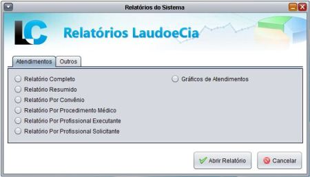

O menu Relatórios
Este menu fica localizado na barra de menus principais.
Os relatórios também podem ser acessados pelo ícone de atalho presente na tela inicial do sistema. Neste caso o sistema irá carregar a seguinte tela:
Para abrir um relatório basta selecionar a opção desejada e clicar no botão Abrir Relatório que o sistema abrirá os filtros para a emissão do mesmo.